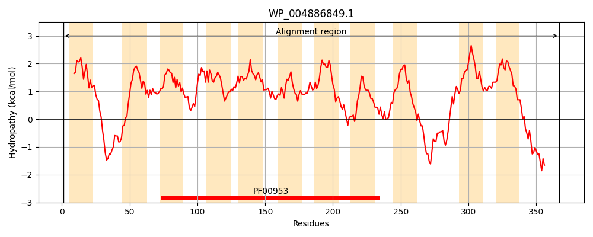
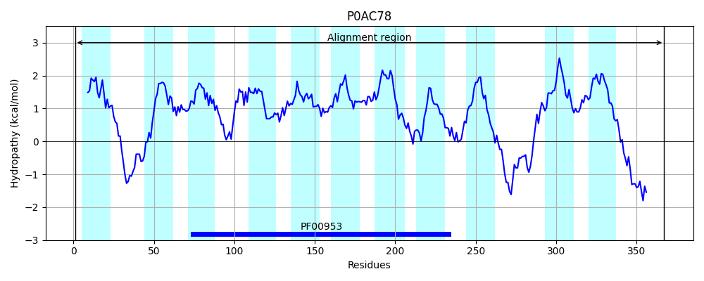
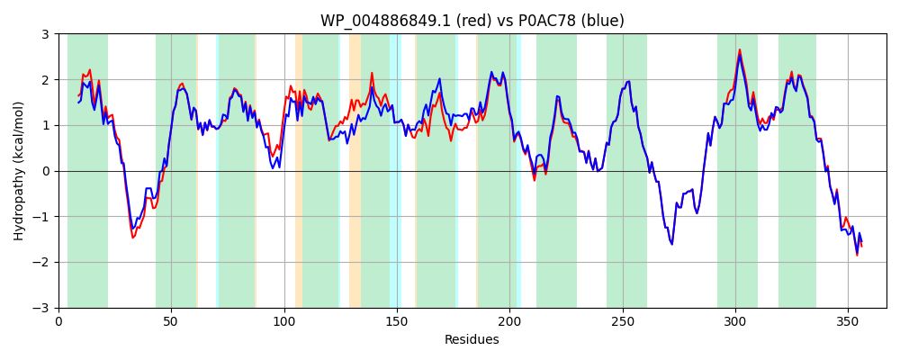

Hit Accession: P0AC78
Hit TCID: 9.B.146.1.7
Hit Description: gnl|BL_ORD_ID|8732 gnl|TC-DB|P0AC78|9.B.146.1.7 Undecaprenyl-phosphate alpha-N-acetylglucosaminyl 1-phosphate transferase OS=Escherichia coli (strain K12) GN=wecA PE=1 SV=1
Mach Len: 367
e:0.000000
Query TMS Count : 11
Hit TMS Count: 11
TMS-Overlap Score: 9.850000
Predicted Substrates:None
BLAST Alignment:
Score: 1688 , Bit scores: 654 bits, E-value: 0.0e+00, Alignment length: 367, Percentage identity: 86
Query: 1 MNLLTAITELISIFLFTTLFIFVARKVAKKIGLVDKPNYRKRHQGLIPLVGGISVYAGICFTFAIADYYIPHASLYLACAGVLVLVGALDDRFDISVKIRAVIQAAIAVIMMMAGNLHLSSLGFIFGSWELVLGPFGFFLTLFAVWAAINAFNMVDGIDGLLGGLSSVSFAATGIILWFDGQYSLAMWCFAMIAAILPYILLNLGALGRRYKVFMGDAGSTMIGFTIIWILLETTQGKTHPISPVTALWIIAIPLMDMVAIMYRRLRKGMSPFSPDRQHIHHLIMRAGFTSRQAFVLITLAAALLALVGVAAEYTRIVPEWVMLILFLVAFFLYGYCIKRAWKVARLVKRIRRRIRRHSGNNPKLTK 367
MNLLT T+LISIFLFTTLF+F ARKVAKK+GLVDKPN+RKRHQGLIPLVGGISVYAGICFTF I DYYIPHASLYLACAGVLV +GALDDRFDISVKIRA IQAA+ ++MM+ G L+LSSLG+IFGSWE+VLGPFG+FLTLFAVWAAINAFNMVDGIDGLLGGLS VSFAA G+ILWFDGQ SLA+WCFAMIAAILPYI+LNLG LGRRYKVFMGDAGST+IGFT+IWILLETTQGKTHPISPVTALWIIAIPLMDMVAIMYRRLRKGMSPFSPDRQHIHHLIMRAGFTSRQAFVLITLAAALLA +GV AEY+ VPEWVML+LFL+AFFLYGYCIKRAWKVAR +KR++RR+RR+ G +P LTK
Sbjct: 1 MNLLTVSTDLISIFLFTTLFLFFARKVAKKVGLVDKPNFRKRHQGLIPLVGGISVYAGICFTFGIVDYYIPHASLYLACAGVLVFIGALDDRFDISVKIRATIQAAVGIVMMVFGKLYLSSLGYIFGSWEMVLGPFGYFLTLFAVWAAINAFNMVDGIDGLLGGLSCVSFAAIGMILWFDGQTSLAIWCFAMIAAILPYIMLNLGILGRRYKVFMGDAGSTLIGFTVIWILLETTQGKTHPISPVTALWIIAIPLMDMVAIMYRRLRKGMSPFSPDRQHIHHLIMRAGFTSRQAFVLITLAAALLASIGVLAEYSHFVPEWVMLVLFLLAFFLYGYCIKRAWKVARFIKRVKRRLRRNRGGSPNLTK 367 | Protein Hydropathy Plots: |
|---|
|  |  |
Pairwise Alignment-Hydropathy Plot:
|
|---|
|  |